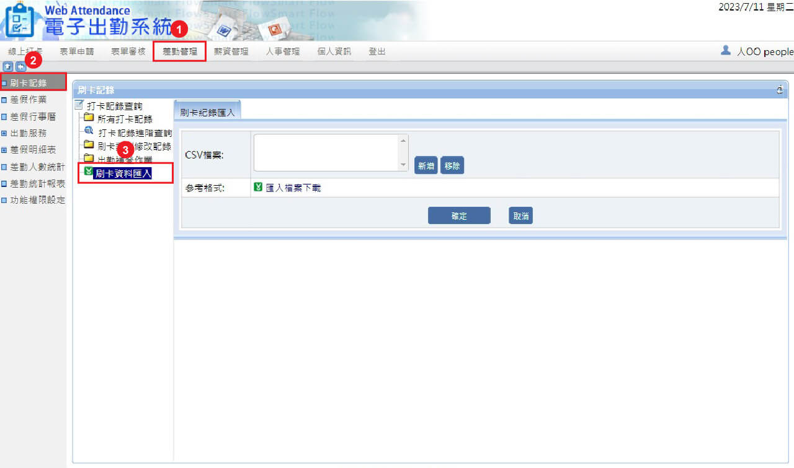
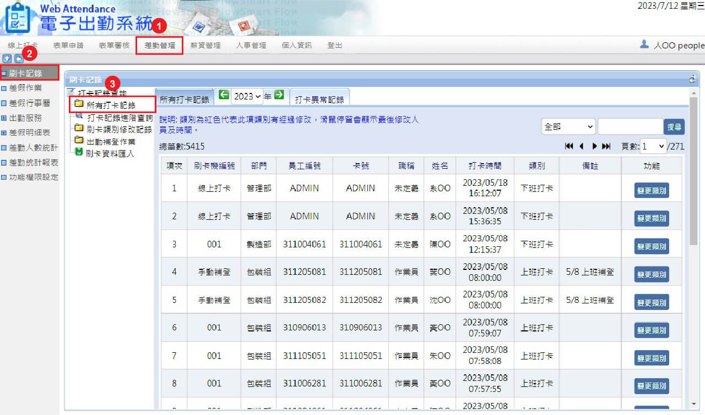
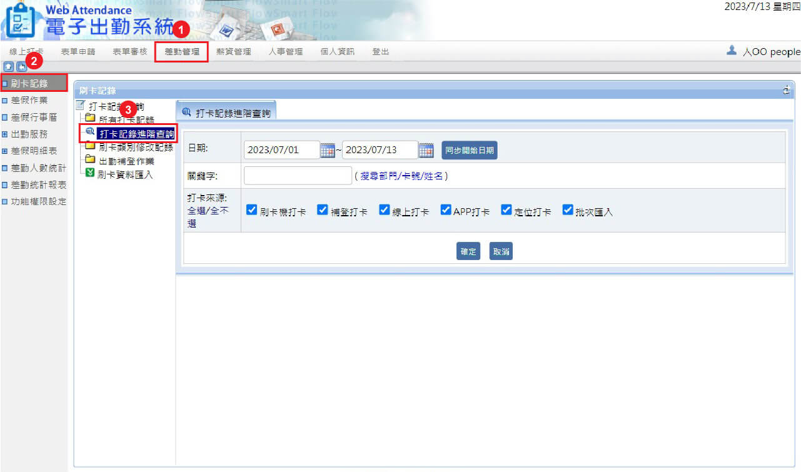

刷卡紀錄查詢：輕鬆匯入人臉指紋刷卡機資料
2023/08/17自動同步
除了線上多元的打卡方式，Class 365 也支援線下整合，包含人臉辨識、指紋辨識、刷卡機等資料，自動同步每天刷卡機資料至雲端，在系統中即可查詢到每天的刷卡資料。
手動匯入
不僅有自動同步功能，也可手動匯入刷卡資料，一鍵匯入 csv 檔案，協助企業整合出缺勤紀錄、提高作業效率。
1.差勤管理 > 2.刷卡紀錄 > 3. 刷卡資料匯入
刷卡紀錄
列表呈現所有手機、網頁或考勤紀錄等所有打卡資料，可手動「變更類別」。另外，也能查看打卡異常紀錄。修改過的紀錄將記錄至側欄選單中的「刷卡類別修改紀錄」，可查詢修改人員、時間與變更內容等資訊。
1.差勤管理 > 2.刷卡紀錄 > 3.所有打卡紀錄
打卡紀錄進階搜尋
如同進階篩選器，提供日期、關鍵字、打卡來源等選項，協助您查詢指定打卡類別的資訊。
1.差勤管理 > 2.刷卡紀錄 > 3.打卡紀錄進階搜尋